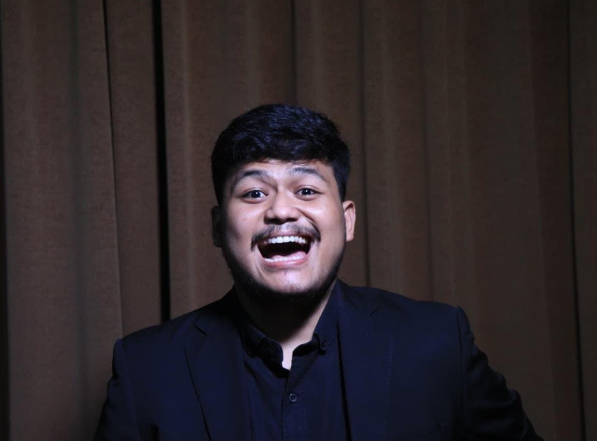
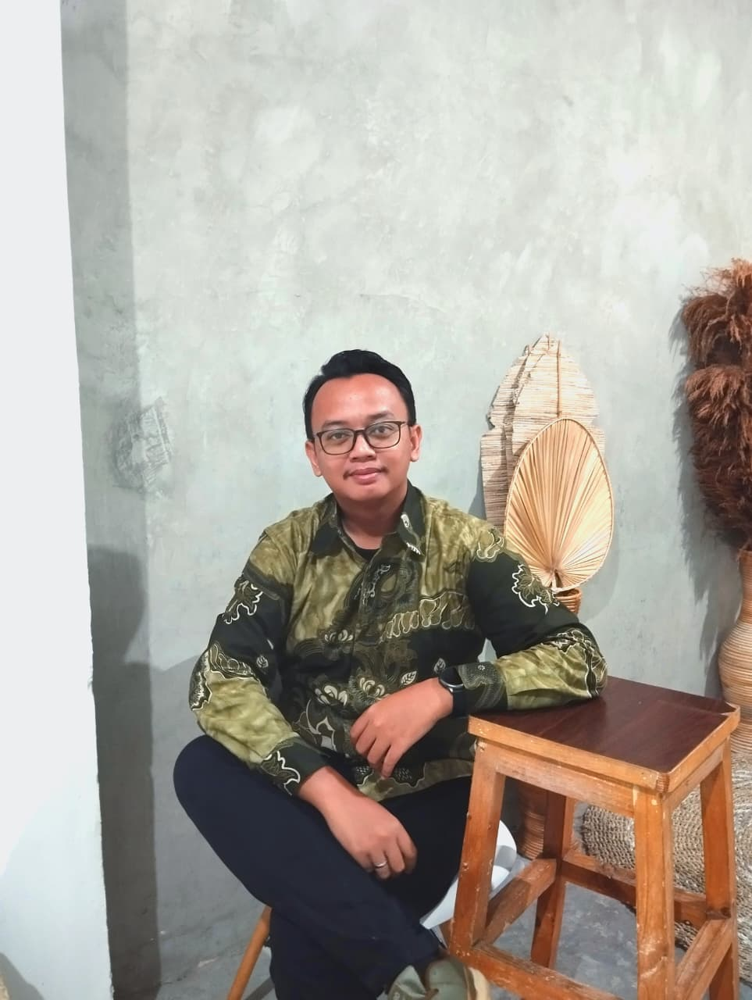
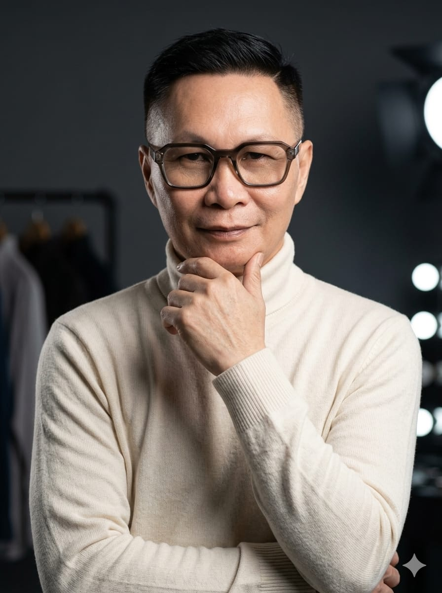

Penilaian Profesional & Independen
Dewan Adjudicator SMESTA 7
Penampilan setiap kontingen dinilai secara ketat, objektif, dan transparan oleh para praktisi ahli bersertifikasi tingkat nasional maupun internasional yang berada di bawah naungan IDCA dan asosiasi resmi lainnya.

'">M. Rifki Prananda
Certified Judge IDCA & Adjudicator Nasional
Sebagai figur yang sarat pengalaman di bidang musik, M. Rifki Prananda saat ini aktif menjabat sebagai Instructor dan Music Arranger untuk Marching Band Gita Pakuan Pemerintah Provinsi Jawa Barat. Beliau merupakan Adjudicator Nasional dan Juri Musical Performance resmi tersertifikasi IDCA yang akan memfokuskan penilaian pada aspek musikalitas, harmoni, serta teknik penguasaan instrumen dari setiap unit peserta.

'">Ilham Abdul Malik
Certified Judge AMBC & IDCA Regional A
Ahli dalam tata gerak dan formasi lapangan, Ilham Abdul Malik merupakan Visual & Drill Designer berpengalaman yang telah menangani unit besar seperti MB Madah Bahana Universitas Indonesia dan PDBI Kabupaten Bandung. Dengan memegang lisensi juri AMBC serta IDCA Regional A, penilaian beliau di arena akan berpusat pada ketepatan desain visual, koreografi, dan presisi langkah marching tiap kontingen.

Redi Restu Fadilah ("Tahe")
Certified Judge WAMSB, DCA Level 3, IDCA, PDBI
Lebih akrab disapa "Tahe", beliau adalah seorang Visual Director terkemuka untuk MB Gita Pakuan dan Bandung Drum Corps. Tahe memiliki portofolio penjurian tingkat tinggi bertaraf internasional dengan mengantongi lisensi WAMSB, Drum Corps Associates (DCA) Level 3, dan IDCA Regional A. Di SMESTA 7, beliau akan menilai dampak keseluruhan pertunjukan (general effect) dan sinergi utuh antara elemen musik dan visual.

'">Iwan Setiawan H ("IWAY")
Asosiasi Juri PDBI & IDCA
Merupakan seorang praktisi kepelatihan senior yang telah menangani instruksi untuk unit-unit prestisius kenegaraan seperti MB Akpol, AMNI, dan Poltekim. Pengalaman internasionalnya sangat ekstensif, meliputi partisipasi teknis dalam berbagai festival marching band di Australia, China, Thailand, dan Jepang. Tergabung dalam Asosiasi Juri PDBI dan IDCA, Iway bertugas menilai kompetensi, teknik, dan penguasaan materi dari para pemain individu.
Vimenia Vidigratia
Juri Kamar Hitung IDCA
Memegang peran administratif yang krusial di balik layar sebagai Juri Kamar Hitung, Vimenia memastikan seluruh proses rekapitulasi nilai berjalan sangat akurat dan transparan. Beliau memiliki rekam jejak sebagai Juri Kamar Hitung pada ajang bergengsi CISSOS 2024, aktif sebagai Pengurus IDCA Kota Cimahi, serta merangkap sebagai Asisten Pelatih dan Pemain Colour Guard yang memahami sistem penilaian secara menyeluruh.